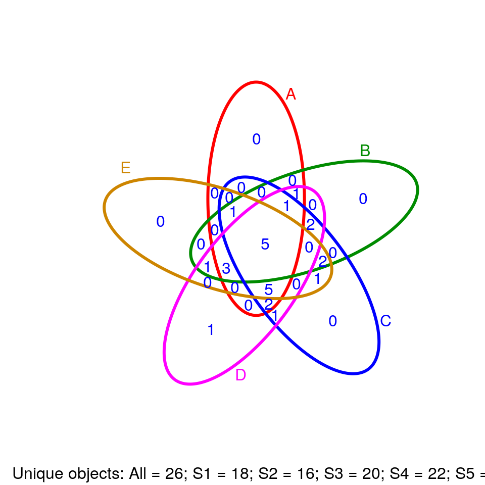

Graphics and Data Visualization in R
20 minute read
Overview
Graphics in R
- Powerful environment for visualizing scientific data
- Integrated graphics and statistics infrastructure
- Publication quality graphics
- Fully programmable
- Highly reproducible
- Full LaTeX, Sweave, knitr and R Markdown support.
- Vast number of R packages with graphics utilities
Documentation on Graphics in R
- General
- Interactive graphics
Graphics Environments
- Viewing and savings graphics in R
- On-screen graphics
- postscript, pdf, svg
- jpeg/png/wmf/tiff/…
- Four major graphics environments
Base Graphics
Overview
- Important high-level plotting functions
plot: generic x-y plottingbarplot: bar plotsboxplot: box-and-whisker plothist: histogramspie: pie chartsdotchart: cleveland dot plotsimage, heatmap, contour, persp: functions to generate image-like plotsqqnorm, qqline, qqplot: distribution comparison plotspairs, coplot: display of multivariant data
- Help on these functions
?myfct?plot?par
Preferred Input Data Objects
- Matrices and data frames
- Vectors
- Named vectors
Scatter Plots
Basic scatter plots
Sample data set for subsequent plots
set.seed(1410)
y <- matrix(runif(30), ncol=3, dimnames=list(letters[1:10], LETTERS[1:3]))
plot(y[,1], y[,2])

All pairs
pairs(y)

Plot labels
plot(y[,1], y[,2], pch=20, col="red", main="Symbols and Labels")
text(y[,1]+0.03, y[,2], rownames(y))

More examples
Print instead of symbols the row names
plot(y[,1], y[,2], type="n", main="Plot of Labels")
text(y[,1], y[,2], rownames(y))
Usage of important plotting parameters
grid(5, 5, lwd = 2)
op <- par(mar=c(8,8,8,8), bg="lightblue")
plot(y[,1], y[,2], type="p", col="red", cex.lab=1.2, cex.axis=1.2,
cex.main=1.2, cex.sub=1, lwd=4, pch=20, xlab="x label",
ylab="y label", main="My Main", sub="My Sub")
par(op)
Important arguments}
mar: specifies the margin sizes around the plotting area in order:c(bottom, left, top, right)col: color of symbolspch: type of symbols, samples:example(points)lwd: size of symbolscex.*: control font sizes- For details see
?par
Add a regression line to a plot
plot(y[,1], y[,2])
myline <- lm(y[,2]~y[,1]); abline(myline, lwd=2)

summary(myline)
##
## Call:
## lm(formula = y[, 2] ~ y[, 1])
##
## Residuals:
## Min 1Q Median 3Q Max
## -0.40357 -0.17912 -0.04299 0.22147 0.46623
##
## Coefficients:
## Estimate Std. Error t value Pr(>|t|)
## (Intercept) 0.5764 0.2110 2.732 0.0258 *
## y[, 1] -0.3647 0.3959 -0.921 0.3839
## ---
## Signif. codes: 0 '***' 0.001 '**' 0.01 '*' 0.05 '.' 0.1 ' ' 1
##
## Residual standard error: 0.3095 on 8 degrees of freedom
## Multiple R-squared: 0.09589, Adjusted R-squared: -0.01712
## F-statistic: 0.8485 on 1 and 8 DF, p-value: 0.3839
Same plot as above, but on log scale
plot(y[,1], y[,2], log="xy")

Add a mathematical expression to a plot
plot(y[,1], y[,2]); text(y[1,1], y[1,2],
expression(sum(frac(1,sqrt(x^2*pi)))), cex=1.3)

Exercise 1
- Task 1: Generate scatter plot for first two columns in
irisdata frame and color dots by itsSpeciescolumn. - Task 2: Use the
xlim/ylimarguments to set limits on the x- and y-axes so that all data points are restricted to the left bottom quadrant of the plot.
Structure of iris data set:
class(iris)
## [1] "data.frame"
iris[1:4,]
## Sepal.Length Sepal.Width Petal.Length Petal.Width Species
## 1 5.1 3.5 1.4 0.2 setosa
## 2 4.9 3.0 1.4 0.2 setosa
## 3 4.7 3.2 1.3 0.2 setosa
## 4 4.6 3.1 1.5 0.2 setosa
table(iris$Species)
##
## setosa versicolor virginica
## 50 50 50
Line Plots
Single Data Set
plot(y[,1], type="l", lwd=2, col="blue")

Many Data Sets
Plots line graph for all columns in data frame y. The split.screen function is used in this example in a for loop to overlay several line graphs in the same plot.
split.screen(c(1,1))
## [1] 1
plot(y[,1], ylim=c(0,1), xlab="Measurement", ylab="Intensity", type="l", lwd=2, col=1)
for(i in 2:length(y[1,])) {
screen(1, new=FALSE)
plot(y[,i], ylim=c(0,1), type="l", lwd=2, col=i, xaxt="n", yaxt="n", ylab="",
xlab="", main="", bty="n")
}

close.screen(all=TRUE)
Bar Plots
Basics
barplot(y[1:4,], ylim=c(0, max(y[1:4,])+0.3), beside=TRUE,
legend=letters[1:4])
text(labels=round(as.vector(as.matrix(y[1:4,])),2), x=seq(1.5, 13, by=1)
+sort(rep(c(0,1,2), 4)), y=as.vector(as.matrix(y[1:4,]))+0.04)

Error bars
bar <- barplot(m <- rowMeans(y) * 10, ylim=c(0, 10))
stdev <- sd(t(y))
arrows(bar, m, bar, m + stdev, length=0.15, angle = 90)

Mirrored bar plot
df <- data.frame(group = rep(c("Above", "Below"), each=10), x = rep(1:10, 2), y = c(runif(10, 0, 1), runif(10, -1, 0)))
plot(c(0,12),range(df$y),type = "n")
barplot(height = df$y[df$group == "Above"], add = TRUE,axes = FALSE)
barplot(height = df$y[df$group == "Below"], add = TRUE,axes = FALSE)

Histograms
hist(y, freq=TRUE, breaks=10)

Density Plots}
plot(density(y), col="red")

Pie Charts
pie(y[,1], col=rainbow(length(y[,1]), start=0.1, end=0.8), clockwise=TRUE)
legend("topright", legend=row.names(y), cex=1.3, bty="n", pch=15, pt.cex=1.8,
col=rainbow(length(y[,1]), start=0.1, end=0.8), ncol=1)

Color Selection Utilities
Default color palette and how to change it
palette()
## [1] "black" "#DF536B" "#61D04F" "#2297E6" "#28E2E5" "#CD0BBC" "#F5C710" "gray62"
palette(rainbow(5, start=0.1, end=0.2))
palette()
## [1] "#FF9900" "#FFBF00" "#FFE600" "#F2FF00" "#CCFF00"
palette("default")
The gray function allows to select any type of gray shades by providing values from 0 to 1
gray(seq(0.1, 1, by= 0.2))
## [1] "#1A1A1A" "#4D4D4D" "#808080" "#B3B3B3" "#E6E6E6"
Color gradients with colorpanel function from gplots library
library(gplots)
colorpanel(5, "darkblue", "yellow", "white")
Much more on colors in R see Earl Glynn’s color chart
Arranging Several Plots on Single Page
With par(mfrow=c(nrow,ncol)) one can define how several plots are arranged next to each other.
par(mfrow=c(2,3)); for(i in 1:6) { plot(1:10) }

Arranging Plots with Variable Width
The layout function allows to divide the plotting device into variable numbers of rows and columns with the column-widths and the row-heights specified in the respective arguments.
nf <- layout(matrix(c(1,2,3,3), 2, 2, byrow=TRUE), c(3,7), c(5,5),
respect=TRUE)
# layout.show(nf)
for(i in 1:3) { barplot(1:10) }

Saving Graphics to Files
After the pdf() command all graphs are redirected to file test.pdf. Works for all common formats similarly: jpeg, png, ps, tiff, …
pdf("test.pdf"); plot(1:10, 1:10); dev.off()
Generates Scalable Vector Graphics (SVG) files that can be edited in vector graphics programs, such as InkScape.
svg("test.svg"); plot(1:10, 1:10); dev.off()
Exercise 2
Bar plots
- Task 1: Calculate the mean values for the
Speciescomponents of the first four columns in theirisdata set. Organize the results in a matrix where the row names are the unique values from theiris Speciescolumn and the column names are the same as in the first fouririscolumns. - Task 2: Generate two bar plots: one with stacked bars and one with horizontally arranged bars.
Structure of iris data set:
class(iris)
## [1] "data.frame"
iris[1:4,]
## Sepal.Length Sepal.Width Petal.Length Petal.Width Species
## 1 5.1 3.5 1.4 0.2 setosa
## 2 4.9 3.0 1.4 0.2 setosa
## 3 4.7 3.2 1.3 0.2 setosa
## 4 4.6 3.1 1.5 0.2 setosa
table(iris$Species)
##
## setosa versicolor virginica
## 50 50 50
Grid Graphics
- What is
grid?- Low-level graphics system
- Highly flexible and controllable system
- Does not provide high-level functions
- Intended as development environment for custom plotting functions
- Pre-installed on new R distributions
- Documentation and Help
lattice Graphics
- What is
lattice?- High-level graphics system
- Developed by Deepayan Sarkar
- Implements Trellis graphics system from S-Plus
- Simplifies high-level plotting tasks: arranging complex graphical features
- Syntax similar to R’s base graphics
- Documentation and Help
Open a list of all functions available in the lattice package
library(help=lattice)
Accessing and changing global parameters:
?lattice.options
?trellis.device
Scatter Plot Sample
library(lattice)
p1 <- xyplot(1:8 ~ 1:8 | rep(LETTERS[1:4], each=2), as.table=TRUE)
plot(p1)

Line Plot Sample
library(lattice)
p2 <- parallelplot(~iris[1:4] | Species, iris, horizontal.axis = FALSE,
layout = c(1, 3, 1))
plot(p2)

ggplot2 Graphics
- What is
ggplot2?- High-level graphics system developed by Hadley Wickham
- Implements grammar of graphics from Leland Wilkinson
- Streamlines many graphics workflows for complex plots
- Syntax centered around main
ggplotfunction - Simpler
qplotfunction provides many shortcuts
- Documentation and Help
ggplot2 Usage
ggplotfunction accepts two arguments- Data set to be plotted
- Aesthetic mappings provided by
aesfunction
- Additional parameters such as geometric objects (e.g. points, lines, bars) are passed on by appending them with
+as separator. - List of available
geom_*functions see here - Settings of plotting theme can be accessed with the command
theme_get()and its settings can be changed withtheme(). - Preferred input data object
qplot:data.frameortibble(support forvector,matrix,...)ggplot:data.frameortibble
- Packages with convenience utilities to create expected inputs
plyrreshape
qplot Function
The syntax of qplot is similar as R’s basic plot function
- Arguments
x: x-coordinates (e.g.col1)y: y-coordinates (e.g.col2)data:data.frameortibblewith corresponding column namesxlim, ylim: e.g.xlim=c(0,10)log: e.g.log="x"orlog="xy"main: main title; see?plotmathfor mathematical formulaxlab, ylab: labels for the x- and y-axescolor,shape,size...: many arguments accepted byplotfunction
qplot: scatter plot basics
Create sample data
library(ggplot2)
x <- sample(1:10, 10); y <- sample(1:10, 10); cat <- rep(c("A", "B"), 5)
Simple scatter plot
qplot(x, y, geom="point")

Prints dots with different sizes and colors
qplot(x, y, geom="point", size=x, color=cat,
main="Dot Size and Color Relative to Some Values")

Drops legend
qplot(x, y, geom="point", size=x, color=cat) +
theme(legend.position = "none")

Plot different shapes
qplot(x, y, geom="point", size=5, shape=cat)

Colored groups
p <- qplot(x, y, geom="point", size=x, color=cat,
main="Dot Size and Color Relative to Some Values") +
theme(legend.position = "none")
print(p)

Regression line
set.seed(1410)
dsmall <- diamonds[sample(nrow(diamonds), 1000), ]
p <- qplot(carat, price, data = dsmall) +
geom_smooth(method="lm")
print(p)

Local regression curve (loess)
p <- qplot(carat, price, data=dsmall, geom=c("point", "smooth"))
print(p) # Setting se=FALSE removes error shade

ggplot Function
- More important than
qplotto access full functionality ofggplot2 - Main arguments
- data set, usually a
data.frameortibble - aesthetic mappings provided by
aesfunction
- data set, usually a
- General
ggplotsyntaxggplot(data, aes(...)) + geom() + ... + stat() + ...
- Layer specifications
geom(mapping, data, ..., geom, position)stat(mapping, data, ..., stat, position)
- Additional components
scalescoordinatesfacet
aes()mappings can be passed on to all components (ggplot, geom, etc.). Effects are global when passed on toggplot()and local for other components.x, ycolor: grouping vector (factor)group: grouping vector (factor)
Changing Plotting Themes in ggplot
- Theme settings can be accessed with
theme_get() - Their settings can be changed with
theme()
Example how to change background color to white
... + theme(panel.background=element_rect(fill = "white", colour = "black"))
Storing ggplot Specifications
Plots and layers can be stored in variables
p <- ggplot(dsmall, aes(carat, price)) + geom_point()
p # or print(p)
Returns information about data and aesthetic mappings followed by each layer
summary(p)
Print dots with different sizes and colors
bestfit <- geom_smooth(method = "lm", se = F, color = alpha("steelblue", 0.5), size = 2)
p + bestfit # Plot with custom regression line
Syntax to pass on other data sets
p %+% diamonds[sample(nrow(diamonds), 100),]
Saves plot stored in variable p to file
ggsave(p, file="myplot.pdf")
ggplot: scatter plots
Basic example
set.seed(1410)
dsmall <- as.data.frame(diamonds[sample(nrow(diamonds), 1000), ])
p <- ggplot(dsmall, aes(carat, price, color=color)) +
geom_point(size=4)
print(p)

Regression line
p <- ggplot(dsmall, aes(carat, price)) + geom_point() +
geom_smooth(method="lm", se=FALSE) +
theme(panel.background=element_rect(fill = "white", colour = "black"))
print(p)

Several regression lines
p <- ggplot(dsmall, aes(carat, price, group=color)) +
geom_point(aes(color=color), size=2) +
geom_smooth(aes(color=color), method = "lm", se=FALSE)
print(p)

Local regression curve (loess)
p <- ggplot(dsmall, aes(carat, price)) + geom_point() + geom_smooth()
print(p) # Setting se=FALSE removes error shade

ggplot: line plot
p <- ggplot(iris, aes(Petal.Length, Petal.Width, group=Species,
color=Species)) + geom_line()
print(p)

Faceting
p <- ggplot(iris, aes(Sepal.Length, Sepal.Width)) +
geom_line(aes(color=Species), size=1) +
facet_wrap(~Species, ncol=1)
print(p)

Exercise 3
Scatter plots with ggplot2
- Task 1: Generate scatter plot for first two columns in
irisdata frame and color dots by itsSpeciescolumn. - Task 2: Use the
xlimandylimarguments to set limits on the x- and y-axes so that all data points are restricted to the left bottom quadrant of the plot. - Task 3: Generate corresponding line plot with faceting show individual data sets in saparate plots.
Structure of iris data set
class(iris)
## [1] "data.frame"
iris[1:4,]
## Sepal.Length Sepal.Width Petal.Length Petal.Width Species
## 1 5.1 3.5 1.4 0.2 setosa
## 2 4.9 3.0 1.4 0.2 setosa
## 3 4.7 3.2 1.3 0.2 setosa
## 4 4.6 3.1 1.5 0.2 setosa
table(iris$Species)
##
## setosa versicolor virginica
## 50 50 50
Bar Plots
Sample Set: the following transforms the iris data set into a ggplot2-friendly format.
Calculate mean values for aggregates given by Species column in iris data set
iris_mean <- aggregate(iris[,1:4], by=list(Species=iris$Species), FUN=mean)
Calculate standard deviations for aggregates given by Species column in iris data set
iris_sd <- aggregate(iris[,1:4], by=list(Species=iris$Species), FUN=sd)
Reformat iris_mean with melt
library(reshape2) # Defines melt function
df_mean <- melt(iris_mean, id.vars=c("Species"), variable.name = "Samples", value.name="Values")
Reformat iris_sd with melt
df_sd <- melt(iris_sd, id.vars=c("Species"), variable.name = "Samples", value.name="Values")
Define standard deviation limits
limits <- aes(ymax = df_mean[,"Values"] + df_sd[,"Values"], ymin=df_mean[,"Values"] - df_sd[,"Values"])
Verical orientation
p <- ggplot(df_mean, aes(Samples, Values, fill = Species)) +
geom_bar(position="dodge", stat="identity")
print(p)

To enforce that the bars are plotted in the order specified in the input data, one can instruct ggplot
to do so by turning the corresponding column (here Species) into an ordered factor as follows.
df_mean$Species <- factor(df_mean$Species, levels=unique(df_mean$Species), ordered=TRUE)
In the above example this is not necessary since ggplot uses this order already.
Horizontal orientation
p <- ggplot(df_mean, aes(Samples, Values, fill = Species)) +
geom_bar(position="dodge", stat="identity") + coord_flip() +
theme(axis.text.y=element_text(angle=0, hjust=1))
print(p)

Faceting
p <- ggplot(df_mean, aes(Samples, Values)) + geom_bar(aes(fill = Species), stat="identity") +
facet_wrap(~Species, ncol=1)
print(p)
Error bars
p <- ggplot(df_mean, aes(Samples, Values, fill = Species)) +
geom_bar(position="dodge", stat="identity") + geom_errorbar(limits, position="dodge")
print(p)

Mirrored
df <- data.frame(group = rep(c("Above", "Below"), each=10), x = rep(1:10, 2), y = c(runif(10, 0, 1), runif(10, -1, 0)))
p <- ggplot(df, aes(x=x, y=y, fill=group)) +
geom_bar(stat="identity", position="identity")
print(p)

Changing Color Settings
library(RColorBrewer)
# display.brewer.all()
p <- ggplot(df_mean, aes(Samples, Values, fill=Species, color=Species)) +
geom_bar(position="dodge", stat="identity") + geom_errorbar(limits, position="dodge") +
scale_fill_brewer(palette="Blues") + scale_color_brewer(palette = "Greys")
print(p)

Using standard colors
p <- ggplot(df_mean, aes(Samples, Values, fill=Species, color=Species)) +
geom_bar(position="dodge", stat="identity") + geom_errorbar(limits, position="dodge") +
scale_fill_manual(values=c("red", "green3", "blue")) +
scale_color_manual(values=c("red", "green3", "blue"))
print(p)

Exercise 4
Bar plots
- Task 1: Calculate the mean values for the
Speciescomponents of the first four columns in theirisdata set. Use themeltfunction from thereshape2package to bring the data into the expected format forggplot. - Task 2: Generate two bar plots: one with stacked bars and one with horizontally arranged bars.
Structure of iris data set
class(iris)
## [1] "data.frame"
iris[1:4,]
## Sepal.Length Sepal.Width Petal.Length Petal.Width Species
## 1 5.1 3.5 1.4 0.2 setosa
## 2 4.9 3.0 1.4 0.2 setosa
## 3 4.7 3.2 1.3 0.2 setosa
## 4 4.6 3.1 1.5 0.2 setosa
table(iris$Species)
##
## setosa versicolor virginica
## 50 50 50
Data reformatting example
Here for line plot
y <- matrix(rnorm(500), 100, 5, dimnames=list(paste("g", 1:100, sep=""), paste("Sample", 1:5, sep="")))
y <- data.frame(Position=1:length(y[,1]), y)
y[1:4, ] # First rows of input format expected by melt()
## Position Sample1 Sample2 Sample3 Sample4 Sample5
## g1 1 1.5336975 -1.0365027 -2.0276195 -0.4580396 -0.06460952
## g2 2 -2.0960304 2.1878704 0.7260334 0.8274617 0.24192162
## g3 3 -0.8233125 0.4250477 0.6526331 -0.4509962 -1.06778801
## g4 4 1.0961555 0.8101104 -0.3403762 -0.7222191 -0.72737741
df <- melt(y, id.vars=c("Position"), variable.name = "Samples", value.name="Values")
p <- ggplot(df, aes(Position, Values)) + geom_line(aes(color=Samples)) + facet_wrap(~Samples, ncol=1)
print(p)

Same data can be represented in box plot as follows
ggplot(df, aes(Samples, Values, fill=Samples)) + geom_boxplot()
Jitter Plots
p <- ggplot(dsmall, aes(color, price/carat)) +
geom_jitter(alpha = I(1 / 2), aes(color=color))
print(p)

Box plots
p <- ggplot(dsmall, aes(color, price/carat, fill=color)) + geom_boxplot()
print(p)

Violin plots
p <- ggplot(dsmall, aes(color, price/carat, fill=color)) + geom_violin()
print(p)

Density plots
Line coloring
p <- ggplot(dsmall, aes(carat)) + geom_density(aes(color = color))
print(p)

Area coloring
p <- ggplot(dsmall, aes(carat)) + geom_density(aes(fill = color))
print(p)

Histograms
p <- ggplot(iris, aes(x=Sepal.Width)) + geom_histogram(aes(y = ..density..,
fill = ..count..), binwidth=0.2) + geom_density()
print(p)

Pie Chart
df <- data.frame(variable=rep(c("cat", "mouse", "dog", "bird", "fly")),
value=c(1,3,3,4,2))
p <- ggplot(df, aes(x = "", y = value, fill = variable)) +
geom_bar(width = 1, stat="identity") +
coord_polar("y", start=pi / 3) + ggtitle("Pie Chart")
print(p)

Wind Rose Pie Chart
p <- ggplot(df, aes(x = variable, y = value, fill = variable)) +
geom_bar(width = 1, stat="identity") + coord_polar("y", start=pi / 3) +
ggtitle("Pie Chart")
print(p)

Arranging Graphics on Page
Using grid package
library(grid)
a <- ggplot(dsmall, aes(color, price/carat)) + geom_jitter(size=4, alpha = I(1 / 1.5), aes(color=color))
b <- ggplot(dsmall, aes(color, price/carat, color=color)) + geom_boxplot()
c <- ggplot(dsmall, aes(color, price/carat, fill=color)) + geom_boxplot() + theme(legend.position = "none")
grid.newpage() # Open a new page on grid device
pushViewport(viewport(layout = grid.layout(2, 2))) # Assign to device viewport with 2 by 2 grid layout
print(a, vp = viewport(layout.pos.row = 1, layout.pos.col = 1:2))
print(b, vp = viewport(layout.pos.row = 2, layout.pos.col = 1))
print(c, vp = viewport(layout.pos.row = 2, layout.pos.col = 2, width=0.3, height=0.3, x=0.8, y=0.8))

Using gridExtra package
library(gridExtra)
grid.arrange(a, b, c, nrow = 2, ncol=2)

Inserting Graphics into Plots
library(grid)
print(a)
print(b, vp=viewport(width=0.3, height=0.3, x=0.8, y=0.8))

Specialty Graphics
Venn Diagrams
library(systemPipeR)
setlist5 <- list(A=sample(letters, 18), B=sample(letters, 16), C=sample(letters, 20), D=sample(letters, 22), E=sample(letters, 18))
OLlist5 <- overLapper(setlist=setlist5, sep="_", type="vennsets")
vennPlot(OLlist5, mymain="", mysub="", colmode=2, ccol=c("blue", "red"))

Compound Structures
Plots depictions of small molecules with ChemmineR package
library(ChemmineR)
data(sdfsample)
plot(sdfsample[1], print=FALSE)

ROC Plots
A variety of libraries are available for plotting receiver operating characteristic (ROC) curves in R:
Example
Most commonly, in an ROC we plot the true positive rate (y-axis) against the false positive rate (x-axis) at decreasing thresholds.
An illustrative example is provided in the ROCR package where one wants to inspect the content of the ROCR.simple object
defining the structure of the input data in two vectors.
# install.packages("ROCR") # Install if necessary on your laptop
library(ROCR)
data(ROCR.simple)
ROCR.simple
## $predictions
## [1] 0.612547843 0.364270971 0.432136142 0.140291078 0.384895941 0.244415489 0.970641299
## [8] 0.890172812 0.781781371 0.868751832 0.716680598 0.360168796 0.547983407 0.385240464
## [15] 0.423739359 0.101699993 0.628095575 0.744769966 0.657732644 0.490119891 0.072369921
## [22] 0.172741714 0.105722115 0.890078186 0.945548941 0.984667270 0.360180429 0.448687336
## [29] 0.014823599 0.543533783 0.292368449 0.701561487 0.715459280 0.714985914 0.120604738
## [36] 0.319672178 0.911723615 0.757325590 0.090988280 0.529402244 0.257402979 0.589909284
## [43] 0.708412104 0.326672910 0.086546283 0.879459891 0.362693564 0.230157183 0.779771989
## [50] 0.876086217 0.353281048 0.212014560 0.703293499 0.689075677 0.627012496 0.240911145
## [57] 0.402801992 0.134794140 0.120473353 0.665444679 0.536339509 0.623494622 0.885179651
## [64] 0.353777439 0.408939895 0.265686095 0.932159806 0.248500489 0.858876675 0.491735594
## [71] 0.151350957 0.694457482 0.496513160 0.123504905 0.499788081 0.310718619 0.907651100
## [78] 0.340078180 0.195097957 0.371936985 0.517308606 0.419560072 0.865639036 0.018527600
## [85] 0.539086009 0.005422562 0.772728821 0.703885141 0.348213542 0.277656869 0.458674210
## [92] 0.059045866 0.133257805 0.083685883 0.531958184 0.429650397 0.717845453 0.537091350
## [99] 0.212404891 0.930846938 0.083048377 0.468610247 0.393378108 0.663367560 0.349540913
## [106] 0.194398425 0.844415442 0.959417835 0.211378771 0.943432189 0.598162949 0.834803976
## [113] 0.576836208 0.380396459 0.161874325 0.912325837 0.642933593 0.392173971 0.122284044
## [120] 0.586857799 0.180631658 0.085993218 0.700501359 0.060413627 0.531464015 0.084254795
## [127] 0.448484671 0.938583020 0.531006532 0.785213140 0.905121019 0.748438143 0.605235403
## [134] 0.842974300 0.835981859 0.364288579 0.492596896 0.488179708 0.259278968 0.991096434
## [141] 0.757364019 0.288258273 0.773336236 0.040906997 0.110241034 0.760726142 0.984599159
## [148] 0.253271061 0.697235328 0.620501132 0.814586047 0.300973098 0.378092079 0.016694412
## [155] 0.698826511 0.658692553 0.470206008 0.501489336 0.239143340 0.050999138 0.088450984
## [162] 0.107031842 0.746588080 0.480100183 0.336592126 0.579511087 0.118555284 0.233160827
## [169] 0.461150807 0.370549294 0.770178504 0.537336015 0.463227453 0.790240205 0.883431431
## [176] 0.745110673 0.007746305 0.012653524 0.868331219 0.439399995 0.540221346 0.567043171
## [183] 0.035815400 0.806543942 0.248707470 0.696702150 0.081439129 0.336315317 0.126480399
## [190] 0.636728451 0.030235062 0.268138293 0.983494405 0.728536415 0.739554341 0.522384507
## [197] 0.858970526 0.383807972 0.606960209 0.138387070
##
## $labels
## [1] 1 1 0 0 0 1 1 1 1 0 1 0 1 0 0 0 1 1 1 0 0 0 0 1 0 1 0 0 1 1 0 1 1 1 0 0 1 1 0 1 0 1 0 1 0 1 0
## [48] 1 0 1 1 0 1 0 1 0 0 0 0 1 1 1 1 0 0 0 1 0 1 0 0 1 0 0 0 0 0 0 0 0 1 0 1 0 0 1 1 0 0 1 0 0 1 0
## [95] 1 0 1 1 0 1 0 0 0 1 0 0 1 0 0 1 1 1 0 0 0 1 1 0 0 1 0 0 1 0 1 0 0 1 1 1 1 1 0 1 1 0 0 0 0 1 1
## [142] 0 1 0 1 0 1 1 1 1 1 0 0 0 1 1 0 1 0 0 0 0 1 0 0 1 0 0 0 0 1 1 0 1 1 1 0 1 1 0 1 1 0 1 0 0 0 1
## [189] 0 0 0 1 0 1 1 0 1 0 1 0
pred <- prediction(ROCR.simple$predictions, ROCR.simple$labels)
perf <- performance( pred, "tpr", "fpr" )
plot(perf)

Obtain area under the curve (AUC)
auc <- performance( pred, "tpr", "fpr", measure = "auc")
auc@y.values[[1]]
## [1] 0.8341875
Trees
The ape package provides many useful utilities for phylogenetic analysis and tree plotting. Another useful package for
plotting trees is ggtree. The following example plots two trees face to face with links to identical
leaf labels.
library(ape)
tree1 <- rtree(40)
tree2 <- rtree(20)
association <- cbind(tree2$tip.label, tree2$tip.label)
cophyloplot(tree1, tree2, assoc = association,
length.line = 4, space = 28, gap = 3)

Genome Graphics
ggbio
- What is
ggbio?- A programmable genome browser environment
- Genome broswer concepts
- A genome browser is a visulalization tool for plotting different types of genomic data in separate tracks along chromosomes.
- The
ggbiopackage (Yin, Cook, and Lawrence 2012) facilitates plotting of complex genome data objects, such as read alignments (SAM/BAM), genomic context/annotation information (gff/txdb), variant calls (VCF/BCF), and more. To easily compare these data sets, it extends the faceting facility ofggplot2to genome browser-like tracks. - Most of the core object types for handling genomic data with R/Bioconductor are supported:
GRanges,GAlignments,VCF, etc. For more details, see Table 1.1 of theggbiovignette here. ggbio’s convenience plotting function isautoplot. For more customizable plots, one can use the genericggplotfunction.- Apart from the standard
ggplot2plotting components,ggbiodefines serval new components useful for genomic data visualization. A detailed list is given in Table 1.2 of the vignette here. - Useful web sites: - ggbio manual
Tracks: aligning plots along chromosomes
library(ggbio)
df1 <- data.frame(time = 1:100, score = sin((1:100)/20)*10)
p1 <- qplot(data = df1, x = time, y = score, geom = "line")
df2 <- data.frame(time = 30:120, score = sin((30:120)/20)*10, value = rnorm(120-30 +1))
p2 <- ggplot(data = df2, aes(x = time, y = score)) + geom_line() + geom_point(size = 2, aes(color = value))
tracks(time1 = p1, time2 = p2) + xlim(1, 40) + theme_tracks_sunset()
Plotting genomic ranges
GRanges objects are essential for storing alignment or annotation ranges in R/Bioconductor. The following creates a sample GRanges object and plots its content.
library(GenomicRanges)
set.seed(1); N <- 100; gr <- GRanges(seqnames = sample(c("chr1", "chr2", "chr3"), size = N, replace = TRUE), IRanges(start = sample(1:300, size = N, replace = TRUE), width = sample(70:75, size = N,replace = TRUE)), strand = sample(c("+", "-"), size = N, replace = TRUE), value = rnorm(N, 10, 3), score = rnorm(N, 100, 30), sample = sample(c("Normal", "Tumor"), size = N, replace = TRUE), pair = sample(letters, size = N, replace = TRUE))
autoplot(gr, aes(color = strand, fill = strand), facets = strand ~ seqnames)

Plotting coverage
autoplot(gr, aes(color = strand, fill = strand), facets = strand ~ seqnames, stat = "coverage")
Mirrored coverage
pos <- sapply(coverage(gr[strand(gr)=="+"]), as.numeric)
pos <- data.frame(Chr=rep(names(pos), sapply(pos, length)), Strand=rep("+", length(unlist(pos))), Position=unlist(sapply(pos, function(x) 1:length(x))), Coverage=as.numeric(unlist(pos)))
neg <- sapply(coverage(gr[strand(gr)=="-"]), as.numeric)
neg <- data.frame(Chr=rep(names(neg), sapply(neg, length)), Strand=rep("-", length(unlist(neg))), Position=unlist(sapply(neg, function(x) 1:length(x))), Coverage=-as.numeric(unlist(neg)))
covdf <- rbind(pos, neg)
p <- ggplot(covdf, aes(Position, Coverage, fill=Strand)) +
geom_bar(stat="identity", position="identity") + facet_wrap(~Chr)
p

Circular genome plots
ggplot(gr) + layout_circle(aes(fill = seqnames), geom = "rect")

More complex circular example
seqlengths(gr) <- c(400, 500, 700)
values(gr)$to.gr <- gr[sample(1:length(gr), size = length(gr))]
idx <- sample(1:length(gr), size = 50)
gr <- gr[idx]
ggplot() + layout_circle(gr, geom = "ideo", fill = "gray70", radius = 7, trackWidth = 3) +
layout_circle(gr, geom = "bar", radius = 10, trackWidth = 4,
aes(fill = score, y = score)) +
layout_circle(gr, geom = "point", color = "red", radius = 14,
trackWidth = 3, grid = TRUE, aes(y = score)) +
layout_circle(gr, geom = "link", linked.to = "to.gr", radius = 6, trackWidth = 1)

Alignments and variants
To make the following example work, please download and unpack this data archive containing GFF, BAM and VCF sample files.
library(rtracklayer); library(GenomicFeatures); library(Rsamtools); library(GenomicAlignments); library(VariantAnnotation)
ga <- readGAlignments("./data/SRR064167.fastq.bam", use.names=TRUE, param=ScanBamParam(which=GRanges("Chr5", IRanges(4000, 8000))))
p1 <- autoplot(ga, geom = "rect")
p2 <- autoplot(ga, geom = "line", stat = "coverage")
vcf <- readVcf(file="data/varianttools_gnsap.vcf", genome="ATH1")
p3 <- autoplot(vcf[seqnames(vcf)=="Chr5"], type = "fixed") + xlim(4000, 8000) + theme(legend.position = "none", axis.text.y = element_blank(), axis.ticks.y=element_blank())
txdb <- makeTxDbFromGFF(file="./data/TAIR10_GFF3_trunc.gff", format="gff3")
p4 <- autoplot(txdb, which=GRanges("Chr5", IRanges(4000, 8000)), names.expr = "gene_id")
tracks(Reads=p1, Coverage=p2, Variant=p3, Transcripts=p4, heights = c(0.3, 0.2, 0.1, 0.35)) + ylab("")

Additional examples
See autoplot demo here
Additional genome graphics
GvizRCircos(Zhang, Meltzer, and Davis 2013)Genome GraphsgenoPlotR
Genome Browser: IGV
View genome data in IGV
- Download and open IGV
- Select in menu in top left corner A. thaliana (TAIR10)
- Upload the following indexed/sorted Bam files with
File -> Load from URL...
http://faculty.ucr.edu/~tgirke/HTML_Presentations/Manuals/Workshop_Dec_6_10_2012/Rrnaseq/results/SRR064154.fastq.bam
http://faculty.ucr.edu/~tgirke/HTML_Presentations/Manuals/Workshop_Dec_6_10_2012/Rrnaseq/results/SRR064155.fastq.bam
http://faculty.ucr.edu/~tgirke/HTML_Presentations/Manuals/Workshop_Dec_6_10_2012/Rrnaseq/results/SRR064166.fastq.bam
http://faculty.ucr.edu/~tgirke/HTML_Presentations/Manuals/Workshop_Dec_6_10_2012/Rrnaseq/results/SRR064167.fastq.bam
- To view area of interest, enter its coordinates
Chr1:49,457-51,457in position menu on top.

Create symbolic links
For viewing BAM files in IGV as part of systemPipeR workflows.
systemPipeR: utilities for building NGS analysis pipelines.
library("systemPipeR")
symLink2bam(sysargs=args, htmldir=c("~/.html/", "somedir/"),
urlbase="http://myserver.edu/~username/",
urlfile="IGVurl.txt")
Controlling IGV from R
Open IGV before running the following routine. Alternatively, open IGV from within R with startIGV("lm") .
Note this may not work on all systems.
library(SRAdb)
myurls <- readLines("http://biocluster.ucr.edu/~tgirke/Documents/R_BioCond/Samples/bam_urls.txt")
#startIGV("lm") # opens IGV
sock <- IGVsocket()
session <- IGVsession(files=myurls,
sessionFile="session.xml",
genome="A. thaliana (TAIR10)")
IGVload(sock, session)
IGVgoto(sock, 'Chr1:45296-47019')
References
Yin, T, D Cook, and M Lawrence. 2012. “Ggbio: An R Package for Extending the Grammar of Graphics for Genomic Data.” Genome Biol. 13 (8). https://doi.org/10.1186/gb-2012-13-8-r77.
Zhang, H, P Meltzer, and S Davis. 2013. “RCircos: An R Package for Circos 2d Track Plots.” BMC Bioinformatics 14: 244–44. https://doi.org/10.1186/1471-2105-14-244.